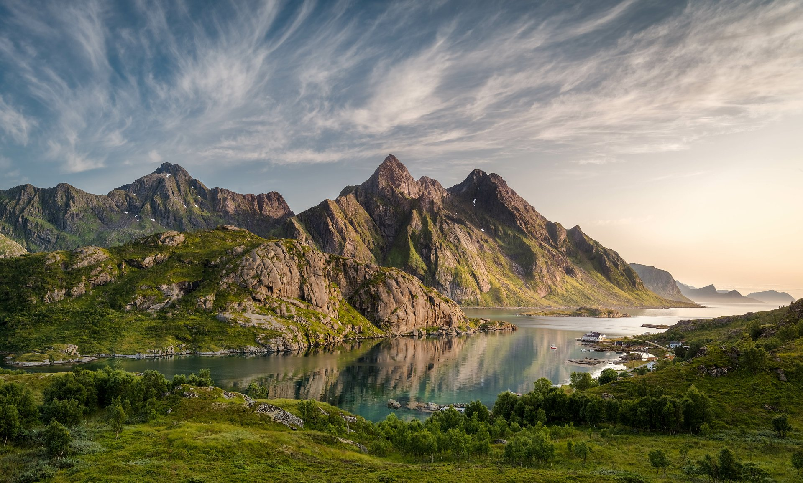

Earth
Our Home Planet

What is Earth?
Earth is the third planet from the Sun and the only place known in the universe where life has originated and found habitability. While Earth may not contain the largest volumes of water in the Solar System, only Earth sustains liquid surface water, extending over 70.8% of the Earth with its ocean, making Earth an ocean world. Earth's polar regions currently retain most of all other water with large sheets of ice covering ocean and land, dwarfing Earth's groundwater, lakes, rivers and atmospheric water. Land, consisting of continents and islands, extends over 29.2% of the Earth and is widely covered by vegetation. Below Earth's surface material lies Earth's crust consisting of several slowly moving tectonic plates, which interact to produce mountain ranges, volcanoes, and earthquakes. Earth's liquid outer core generates a magnetic field that shapes the magnetosphere of Earth, largely deflecting destructive solar winds and cosmic radiation.
Atmosphere
Earth has an atmosphere, which sustains Earth's surface conditions and protects it from most meteoroids and UV-light at entry. It has a composition of primarily nitrogen and oxygen. Water vapor is widely present in the atmosphere, forming clouds that cover most of the planet. The water vapor acts as a greenhouse gas and, together with other greenhouse gases in the atmosphere, particularly carbon dioxide (CO2), creates the conditions for both liquid surface water and water vapour to persist via the capturing of energy from the Sun's light. This process maintains the current average surface temperature of 14.76 °C, at which water is liquid under atmospheric pressure. Differences in the amount of captured energy between geographic regions (as with the equatorial region receiving more sunlight than the polar regions) drive atmospheric and ocean currents, producing a global climate system with different climate regions, and a range of weather phenomena such as precipitation, allowing components such as nitrogen to cycle.
History
Earth, like most other bodies in the Solar System, formed 4.5 billion years ago from gas in the early Solar System. During the first billion years of Earth's history, the ocean formed and then life developed within it. Life spread globally and has been altering Earth's atmosphere and surface, leading to the Great Oxidation Event two billion years ago. Humans emerged 300,000 years ago, and have reached a population of 8 billion today. Humans depend on Earth's biosphere and natural resources for their survival, but have increasingly impacted the planet's environment. Humanity's current impact on Earth's climate and biosphere is unsustainable, threatening the livelihood of humans and many other forms of life, causing widespread extinctions.
Earth formation

A solar nebula partitions a volume out of a molecular cloud by gravitational collapse, which begins to spin and flatten into a circumstellar disk, and then the planets grow out of that disk with the Sun. According to nebular theory, planetesimals formed by accretion, with the primordial Earth being estimated as likely taking anywhere from 70 to 100 million years to form. Then, a Mars-sized object with about 10% of Earth's mass, named Theia, collided with Earth. It hit Earth with a glancing blow and some of its mass merged with Earth. The impact blasted material into orbit about the Earth and the material accreted and formed the Moon.
Moon
Earth's closest friend
What is the Moon

The Moon is Earth's only natural satellite. Its diameter is about one-quarter of Earth's (comparable to the width of Australia), making it the fifth largest satellite in the Solar System and the largest and most massive relative to its parent planet. It is larger than all known dwarf planets in the Solar System. The Moon is a planetary-mass object with a differentiated rocky body, making it a satellite planet under the geophysical definitions of the term. It lacks any significant atmosphere, hydrosphere, or magnetic field. Its surface gravity is about one-sixth of Earth's at 0.1654 g—Jupiter's moon Io is the only satellite in the Solar System known to have a higher surface gravity and density.
- Average distance from Earth
- 384,400 km
- Approximate diameter
- 3,475 km
- Natural satellites
- The Moon is Earth's only natural satellite.
Moon's Orbit
The Moon orbits Earth at an average distance of 384,400 km (238,900 mi), or about 30 times Earth's diameter. Its gravitational influence is the main driver of Earth's tides and very slowly lengthens Earth's day. The Moon's orbit around Earth has a sidereal period of 27.3 days. During each synodic period of 29.5 days, the amount of visible surface illuminated by the Sun varies from none up to 100%, resulting in lunar phases that form the basis for the months of a lunar calendar. The Moon is tidally locked to Earth, which means that the length of a full rotation of the Moon on its own axis causes its same side (the near side) to always face Earth, and the somewhat longer lunar day is the same as the synodic period.
Three Fun Facts about the Moon
1. The Moon used to look much bigger
The Moon started out around ten times closer to the Earth than it is now. Imagine looking up at the night sky and seeing the Moon 10 times bigger. Computer simulations suggest the Moon could even have been 12-19 times closer, at a distance of just 20,000-30,000km, compared to 384,000km today. And it is still spinning away. Because of a transfer of energy from the rotation and tidal bulges of the Earth, the Moon gets 3.78cm further away each year. That’s roughly the same rate at which your fingernails grow.2. Moon dust smells like gunpowder
There is a lot dust on the surface of the Moon and the Apollo astronauts found their suits covered in it when they climbed into their lunar modules. One astronaut on the Apollo 17 mission (Harrison ‘Jack’ Schmitt) likened its smell to that of gunpowder. The dust caused some astronauts a kind of ‘lunar hay fever.’ The sneezing and congestion took days to disappear. The good thing is there is no wind to blow it about.3. A lunar eclipse saved Christopher Columbus
The Nebra Sky Disc, a bronze artefact dating to 1600BC which was discovered in Germany, is the first known human map to include an image of the Moon - and it is a reminder of how much the Moon has influenced human history. The Moon even saved the explorer Christopher Columbus from starvation. After consulting his almanac, Columbus used the lunar eclipse of February 29, 1504, to frighten the native Arawak Indians on the island of Jamaica into giving him and his crew food. According to his son Ferdinand, at the sight of the eclipse the Arawaks with great howling and lamentation came running from every direction to the ships laden with provisions.Surface and Exploration

The Moon's surface is covered with craters, mountains, broad plains, and fine dust called regolith. Its dark plains, known as maria, formed when ancient lava filled large impact basins. The first crewed landing took place during NASA's Apollo 11 mission in 1969. Astronauts have since brought lunar samples back to Earth, helping scientists study how the Moon formed and how rocky worlds change over time. Robotic spacecraft continue to map the surface and investigate resources such as water ice near the lunar poles.
Mars
The Red Planet
What is Mars?

Mars is the fourth planet from the Sun and a small, rocky world. Its reddish appearance comes from iron minerals in its soil that have rusted over time. Mars has a thin atmosphere made mostly of carbon dioxide, and its surface is cold and dry today. Evidence preserved in its rocks and landscapes suggests that liquid water once flowed across parts of the planet.
- Position from the Sun
- Fourth planet
- Known natural satellites
- Phobos and Deimos
- Length of a Martian day
- About 24 hours and 39 minutes
A World of Extremes
Mars is home to Olympus Mons, the largest known volcano in the Solar System, and Valles Marineris, a vast canyon system stretching thousands of kilometers. The planet has seasons because its rotational axis is tilted, and dust storms can grow large enough to cover much of the globe. Two small moons, Phobos and Deimos, orbit Mars. Phobos is slowly moving closer to the planet, while Deimos follows a more distant orbit.
Exploring Mars

Orbiters, landers, and rovers have studied Mars from above and on the ground. Robotic rovers examine rocks, weather, and the planet's past habitability, while orbiters map its surface and atmosphere. These missions help scientists understand how Mars changed from a world with evidence of ancient water into the cold desert seen today. They also prepare for future human exploration.
Solar System
Our Cosmic Neighborhood
What is the Solar System?

The Solar System consists of the Sun and all the objects held by its gravity. These include eight planets, their moons, dwarf planets, asteroids, comets, and countless smaller pieces of rock and ice. The Solar System formed about 4.6 billion years ago from a cloud of gas and dust. The Sun contains most of its mass and provides the light and heat that shape conditions on the planets.
- Central star
- The Sun
- Age
- About 4.6 billion years
- Number of planets
- Eight
The Eight Planets
The planets travel around the Sun in this order:
-
Mercury — the smallest planet and closest to the Sun.

Mercury's cratered surface. NASA/Johns Hopkins APL/Carnegie Institution of Washington -
Venus — a rocky planet with a dense atmosphere and an extremely hot surface.

Venus's dense global cloud layer. NASA/JPL-Caltech -
Earth — the only world currently known to support life.

Earth seen from Apollo 17. NASA -
Mars — a rocky world with a thin atmosphere and evidence of ancient water.

Curiosity rover's panorama of the Murray Buttes. NASA/JPL-Caltech/MSSS -
Jupiter — the largest planet, with bands of clouds and many moons.

Jupiter's turbulent cloud tops. NASA/JPL-Caltech/SwRI/MSSS -
Saturn — a giant planet surrounded by a broad system of rings.

Saturn's rings seen by Cassini. NASA/JPL-Caltech/Space Science Institute -
Uranus — an ice giant that rotates with its axis tilted dramatically sideways.

Uranus seen by Voyager 2. NASA/JPL -
Neptune — a distant ice giant with fast winds and a deep blue appearance.

Neptune and its moon Triton. NASA/JPL
Beyond the Planets
Between Mars and Jupiter lies the main asteroid belt, a region containing many rocky objects. Beyond Neptune, the Kuiper Belt holds icy bodies, including dwarf planets such as Pluto. Much farther out, the Oort Cloud is thought to be a distant reservoir of icy objects that can become long-period comets. Together, these small bodies preserve clues about the materials and processes involved in the Solar System's formation.